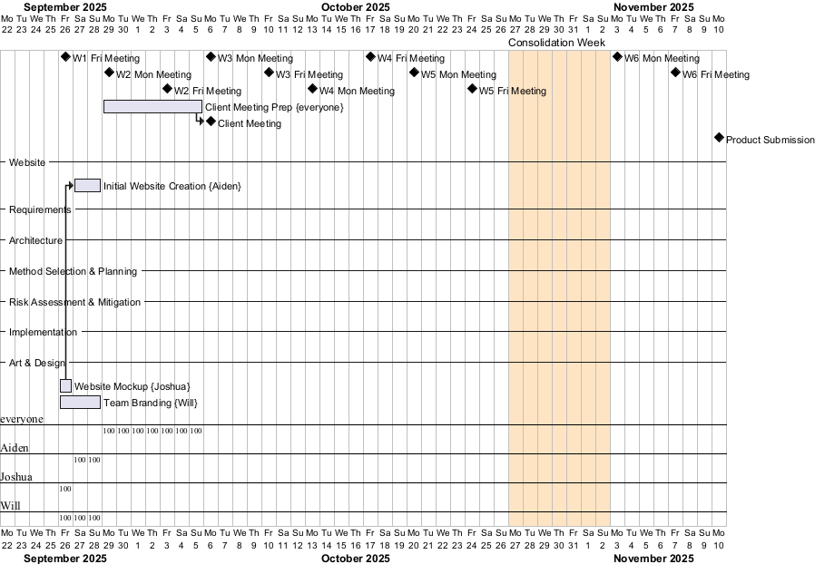
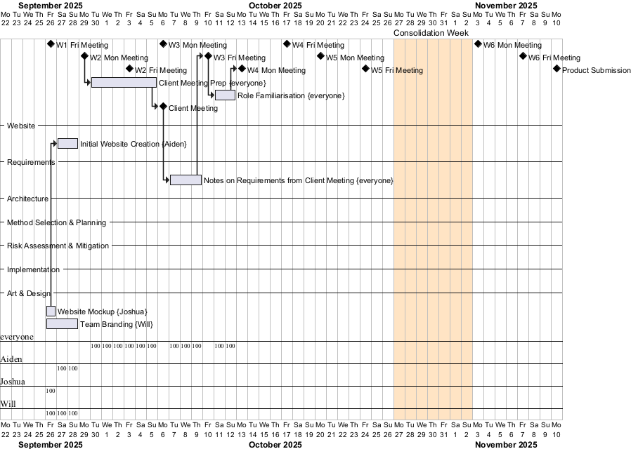
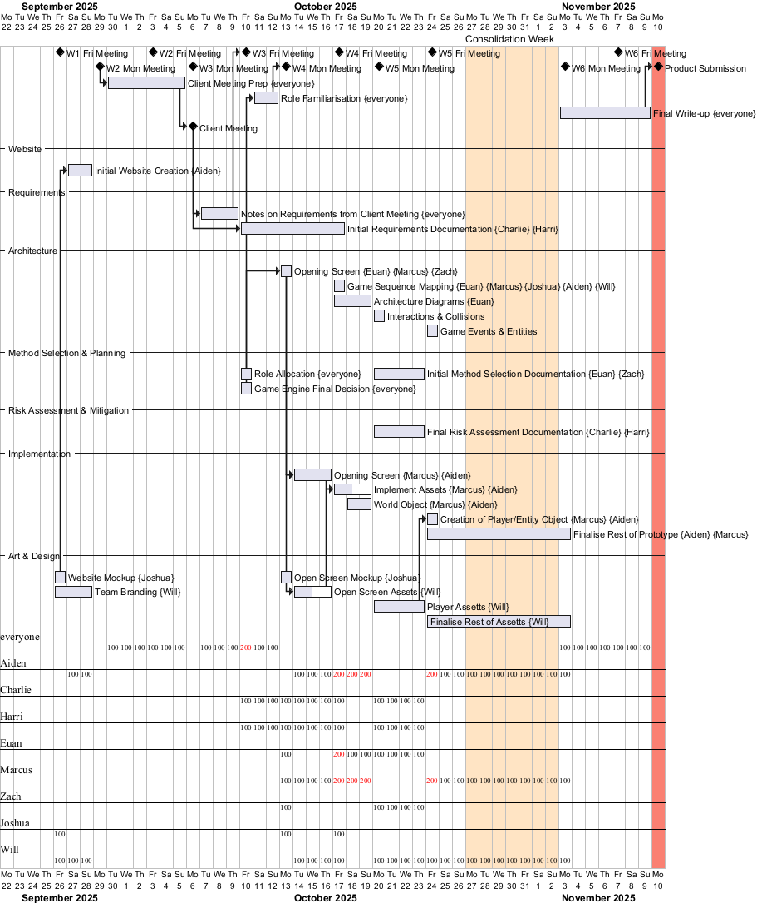
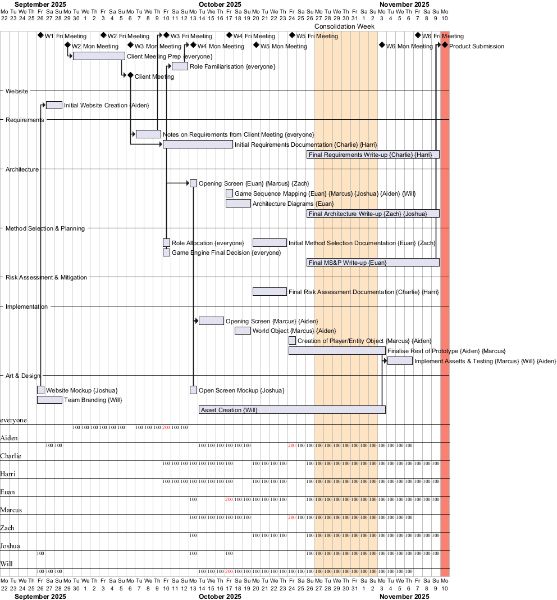
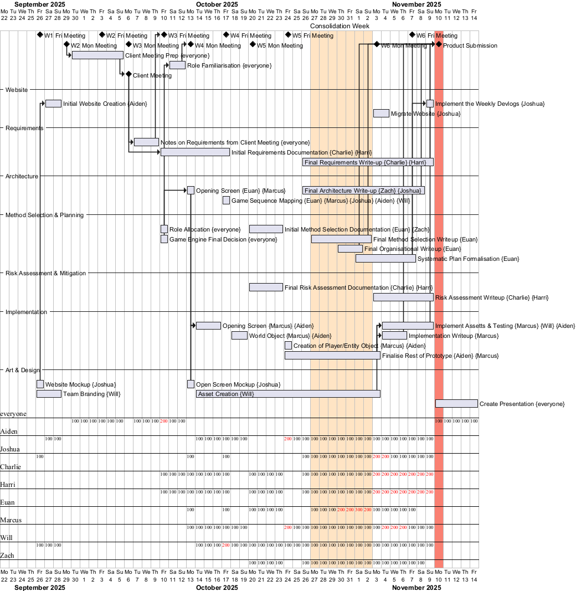

Devlog
Week 1
As of week one, we met as a group for the first time on Friday. Current tasks assigned include: the creation of the website mock {Joshua}; implementation of the initial website {Aiden}; team branding {Will}; and familiarisation with the product brief to prepare for the first client meeting {everyone}—no tasks running behind at this stage. Website creation is dependent on a website mock-up.
Week 2
As of our Monday Meeting this week, all tasks set last Friday have been completed. For the remainder of the meeting, progress has been made on preparing for the client meeting, which is the team's sole task at this stage. Ideas for style and gameplay have been placed in the private Google Drive, and a shared questions document has been created and shared. A shared GitHub organisation has been made.
As of our Friday meeting, client meeting prep has continued, and the meeting has been set for the following Monday, after the Monday Meeting next week. Continued preparations for client meetings have been made. No other tasks have been set except for ongoing preparation ahead of the client meeting.
Week 3
Our Monday Meeting followed on from our previous meeting on Friday. The meeting concluded with the Client Meeting. All members were expected to take notes on requirements gained from the client meeting and bring them to the next meeting on Friday.
Our Friday meeting started with discussions on role allocation and responsibilities. The decision was made to form teams based on each deliverable, and the size of each team was determined by the marks provided for each deliverable. Roles were recorded on a Google Sheet created by Aiden prior to the meeting. The rest of the meeting involved individual teams discussing what needed to be done. At the end of the meeting, team members were instructed to take the weekend to familiarise themselves with their respective roles and reconvene on Monday, when a timeline for the remainder of the project would be drafted.
Week 4
Our Monday meeting began with an in-depth discussion on the project's remaining timeline, led by the Method Selection and Planning team and the Scrum Leader. Through this discussion, a shared Trello page was created to keep an informal timeline of the project. General themes for weekly tasks have been set for all subsequent weeks up to the project's completion. The latter half of the meeting involved smaller discussions between individual deliverable teams. The requirements teams continued their documentation, as most of the development depends on it. The Architecture, Art, and Implementation teams decided to start on the opening screen as an easier first task to familiarise themselves with the workflows.
At our Friday meeting, with most of the initial requirements documented, we could begin work on the architecture of the central gameplay portion of the prototype. Most of this meeting’s discussion centred on a high-level game sequence and the architecture of the world object, with the intention of implementing the world object over the weekend. Currently, the only task running behind schedule is the creation of open screen assets, but this has not significantly impacted the project, as we are presently using placeholder assets.
Week 5
During our Monday discussions regarding assets and the choice to use placeholder assets during development, we have allowed ourselves to push forward with development without the dependency on assets beforehand. This has meant that we have opened the window in which they need to be created and intend to implement them in the later part of the development. Architecture diagrams are also behind; however, the discovery of a functionality in IntelliJ has meant that this task can be done automatically after development. Discussion of architecture is now being held with input from both architecture and implementation teams, given the current pace of development. We have discussed both events and player/entity objects.
During our Friday meeting, the discussion centred on preparations for work to be done during Consolidation Week. This will mainly consist of final deliverables write-ups, completing the prototype, and then final ‘Beautification’ in week 6 when we reconvene. Due to unforeseen circumstances, some roles have been reassigned to ensure all deliverables are completed on time, with a portion of the responsibility being allocated to team members who have already fulfilled their respective tasks.
Week 6
During our Monday meeting, we discussed progress made during Consolidation Week. Requirements have been in an almost final state for two to three weeks, so a final write-up is on track. Most Assets are finished, so progress is being made on implementing them. Testing is also on track. The decision to migrate the website to a GitHub URL has been made, and implementing fonts and the Devlog section has been set as a task. The architecture write-up is currently behind schedule, so Joshua has shifted all resources to assist Zach. Risk Assessment Final write-up is on track. The Method Selection & Planning write-up is slightly behind schedule but is on track to be finished by Friday. The Friday meeting is set, as well as a possible meeting on Wednesday or Saturday.
As of our Friday Meeting, most write-ups are nearing completion or are complete. Risk Assessment and Requirements are complete. All other write-ups are set for completion within the next day. A meeting is scheduled for Saturday to finalise testing and review write-ups.
As of our Saturday Meeting, all write-ups have been completed and are awaiting final formatting ahead of submission. Testing and minor adjustments have been made to the final gameplay, and development of the mapping tool has been completed to support map creation for future growth. Minor adjustments have been made to specific assets. Submission set for Sunday.